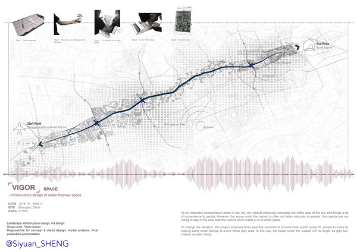
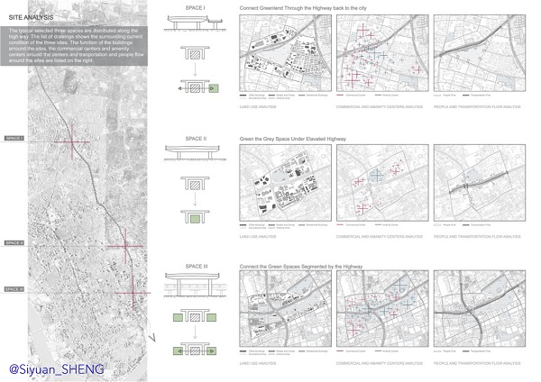

- [DATE] 10/2016 - 11/2016
- [SITE] Shanghai, China
- [AREA] 4.75ha
- [Personal Work] Landscape infrastructure, art design
- Credit to Junyao Lyu and Yifei Li for cooperating with the manual model
-
As an important transportation mode in the city, the viaduct effectively increase the traffic area of the
city and brings a lot of convenience to people. However, the space under the viaduct is often not taken seriously
by people. Thus, people are not willing to stay in the area near the viaduct which waste a lot of urban spaces.
-
To change the situation, this project proposes three possible solutions to provide more public space for people to
move by making some small change to enlive these grey area. In this way, the space under the viaduct will no longer
to grey but instead, exudes vitality.
|
 |
| |
-
The three typical sites are selected to study the project. The typical selected spaces are distributed along the highway.
The list of drawings shows the surrounding current condition of the three sites. The function of the buildings arround the sites,
the commercial centers and amenity centers around the centers and transportation and people flow around the sites are listed on the right.s
-
There are mainly three ways to reconnect the green or regreen the under highway spaces. The analysis of the information of surrounding environment
have been analyzed to support the designs.
-
|
 |
| |
-
The site is chosen located in the area surrounded by commercial buildings, residential communities and also educatioanland artistic
buildings. The design of this site shows a possibility of the interface between the elavated highway and other part of the city.
-
After the elevated highway placed in the city. the interface between the highway and the city is a critical part of consideration.
This site is chosen to show the possibility of the interface.
|
|
| |
-
The second site is located in a busy area and the site is chosen to study the potential of greening the space under highway with plants.
The built of the highway expended transportational area but waste the under space for planting. The self-circulation system is trying to
build plants to re-green the grey spaces.
|
|
| |
-
The highway segmented the city and seperate many places that originally connected. Thus, the connection across the highway is a critical point.
The site is choosen since it is surrounded by the areas with different functions but all of them are on different sides of the highway.
-
There are many pedestrain bridges nowadays some with the elavater. However, there are all the same everywhere and are not considering the actual
situation. The design of this site is proposing the potential possibility of the connection between the bridge and the city.
|
|